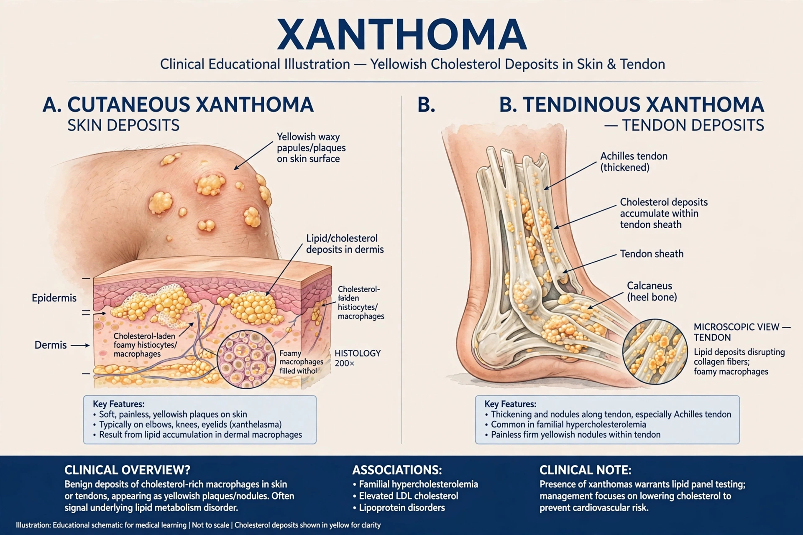

A xanthoma is a deposition of yellowish cholesterol-rich material that can appear anywhere in the body in various disease states. Xanthomas are cutaneous manifestations of lipidosis in which lipids accumulate in large foam cells within the skin.

XanthomaXanthelasma are yellow plaques around the eyelids. Tendinous xanthomas occur over tendons, especially the Achilles tendon, and are characteristic of familial hypercholesterolaemia. Eruptive xanthomas are small yellow papules associated with very high triglycerides. Tuberous and plane xanthomas occur at other sites.
Xanthomas signal disorders of lipid metabolism, including inherited conditions diagnosed with tools such as the Simon Broome criteria, as well as diabetes, hypothyroidism and cholestatic liver disease.
Treatment addresses the underlying lipid disorder with diet, statins, ezetimibe or other lipid-lowering therapy; lesions may regress as lipids fall. Cosmetic removal is possible for persistent lesions.